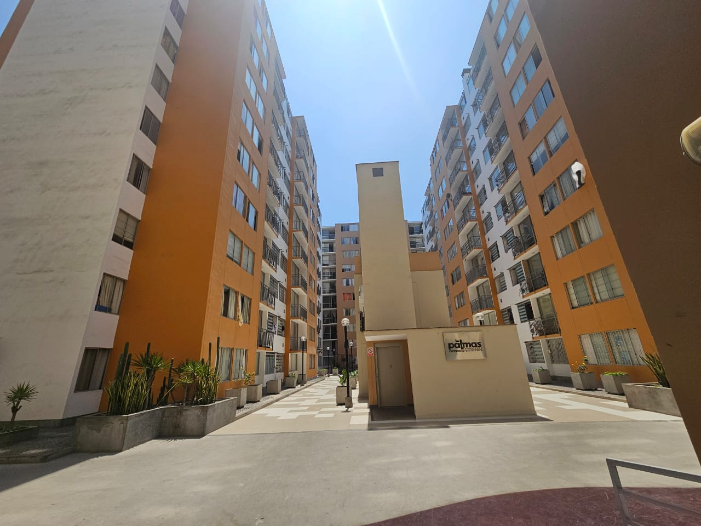

Kercado
El mercado interno de nuestra comunidad, donde comprar y vender es más cercano y seguro.

Qué es Kercado
Kercado es una plataforma digital exclusiva para los residentes, diseñada para fomentar el comercio local dentro de nuestra propia comunidad de forma rápida, práctica y confiable.
Con una interfaz intuitiva y accesible desde cualquier dispositivo, buscamos fortalecer los lazos vecinales facilitando el intercambio de productos y servicios cotidianos.
Un vecino compra y vende con la misma cuenta, utilizando el mismo usuario para ambas actividades sin necesidad de registros separados.
Cómo funciona
1. El vecino publica
Sube las fotos y los detalles del producto o servicio que deseas ofrecer en pocos minutos.
2. Otro vecino pide
Revisa las publicaciones disponibles y contacta al vendedor directamente para solicitar el artículo.
3. Acuerdan pago y entrega entre ellos
Definen los detalles finales de manera directa. Kercado no cobra ni reparte.
Para quién es
Residentes del condominio Las Palmas 357.
Métodos de pago
- Efectivo contra entrega
- Yape
- Plin
Kercado no procesa pagos, solo registra el método acordado.
Reglas de convivencia
- Mantén un trato respetuoso y cordial en todas las negociaciones con tus vecinos.
- Publica únicamente productos y servicios que cumplan con las normas de seguridad del condominio.
- Sé puntual y claro al acordar los puntos y horarios de entrega.
- Reporta cualquier inconveniente o uso inadecuado de la plataforma a los administradores.
- Verifica el estado del producto antes de concretar la transacción final.
Nosotros
Piero Alessandro Pérez Izquierdo
A cargo del panel.html y la integración general, tablas, estructura de página, funcionamiento y orden del repositorio.
Edgar Paolo Pérez Román
A cargo de index.html, la sección multimedia, las anclas del footer y la estructura general del inicio.
Francys Diego Yareta Cortez
A cargo de catalogo.html, producto.html, la tabla ficha y la estructura de la página con el aside.
Luis Alberto Huánuco Jiménez
A cargo de registro.html, el formulario completo y la gestión de todos los archivos multimedia del proyecto.